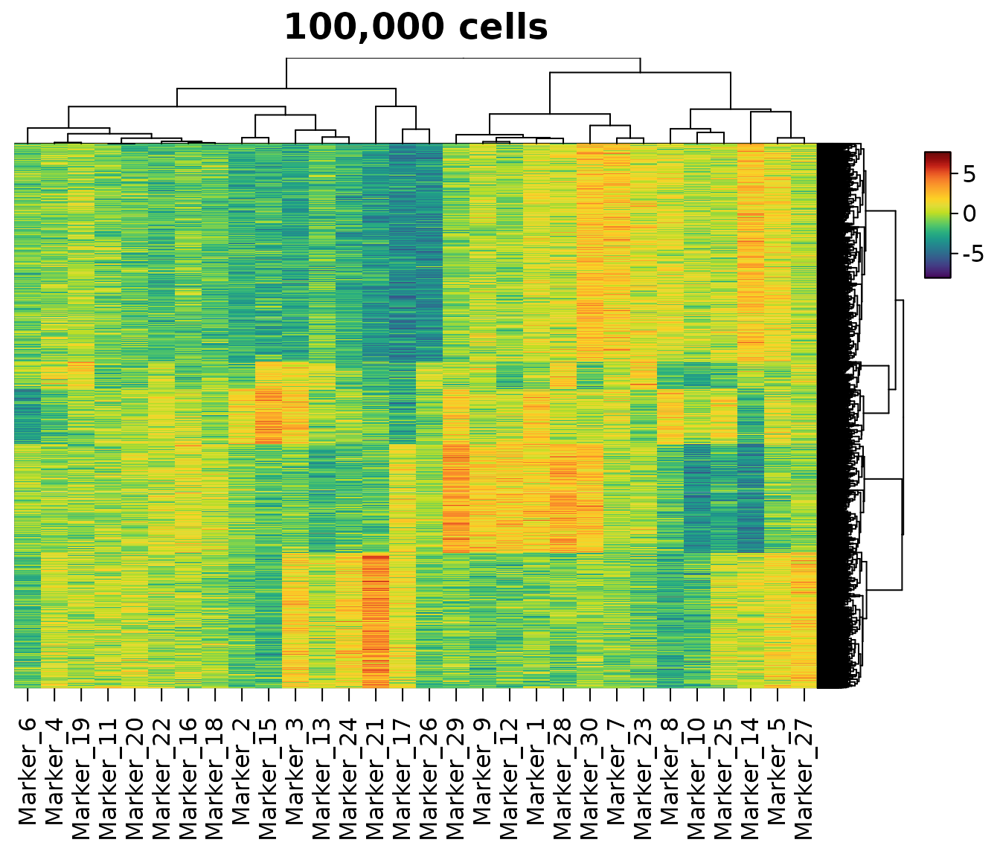
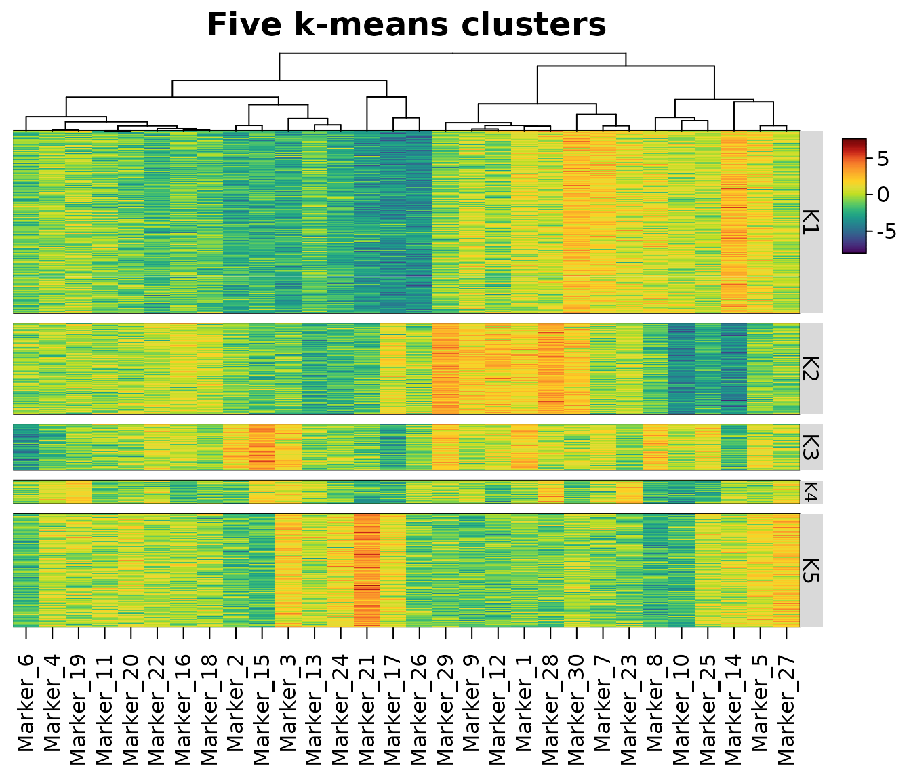
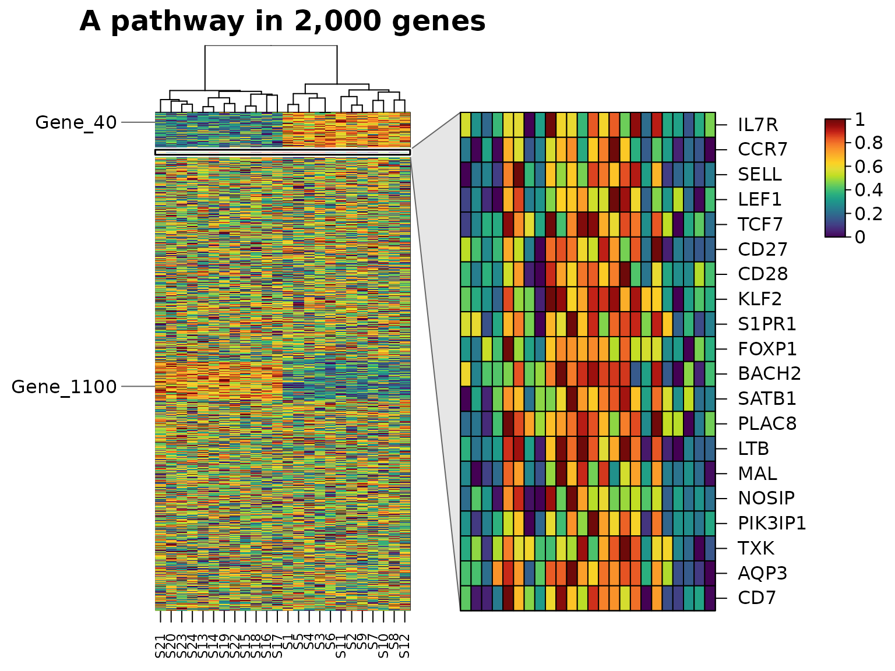
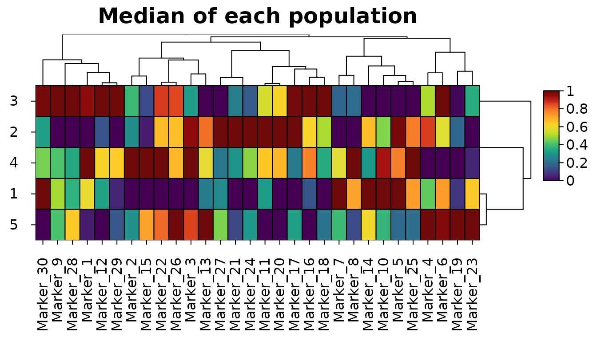

Single-cell and cytometry data routinely have hundreds of thousands of rows, and expression data tens of thousands of genes. HeatmapR is built for this: every heatmap in this article is drawn while the page is built, and the timings are those of the machine that built it. For comparisons with other packages, see the speed comparison.
library(HeatmapR)
heat_map_threads()
#> [1] 4100,000 rows
The data below are 100,000 simulated cells with 30 markers, from five populations of different sizes.
set.seed(1)
n <- 1e5
population <- sample(5, n, replace = TRUE, prob = c(40, 25, 20, 10, 5))
centres <- matrix(rnorm(5 * 30, sd = 1.5), 5)
cells <- centres[population, ] + matrix(rnorm(n * 30), n)
colnames(cells) <- paste0("Marker_", 1:30)A heatmap of all of them, with the cells and markers clustered:
time <- system.time(
hm <- heat_map(
cells,
tree = "both",
axis_text_y = NA,
title = "100,000 cells"
)
)
time[["elapsed"]]
#> [1] 1.511Two things make this fast: the cells are drawn as an image, and the rows are clustered in two stages.
Drawing
Heatmaps with more than 50,000 cells are drawn as raster images
rather than one rectangle per cell (cell_raster = "auto"),
with the colour of every cell worked out in compiled code. Raster images
look the same as rectangles, draw much faster and give smaller vector
files. Cell borders are left out when the cells are smaller than three
line widths, and are drawn as grid lines over raster images.
cell_raster = TRUE uses raster images for any heatmap of
plain rectangles and cell_raster = FALSE never does.
The size in megabytes and the time in seconds of saving 10,000 of the cells (300,000 cells of the heatmap) to a PDF each way:
save_pdf <- function(raster) {
file <- tempfile(fileext = ".pdf")
time <- system.time({
heat_map_save(file, width = 7, height = 6)
heat_map(cells[1:10000, ], axis_text_y = NA, cell_raster = raster)
heat_map_complete()
})[["elapsed"]]
c(megabytes = round(file.size(file) / 1e6, 2), seconds = round(time, 2))
}
rbind(raster = save_pdf(TRUE), rectangles = save_pdf(FALSE))
#> megabytes seconds
#> raster 0.67 0.10
#> rectangles 1.94 1.01A dendrogram adds a line for every branch, so the PDF of the clustered 100,000-row heatmap above is larger than the image of its cells.
Two-stage clustering
Exact hierarchical clustering needs the distance between every pair
of rows: 5 billion distances (40 GB) for 100,000 rows. Rows beyond
clust_max (5000 by default) are clustered in two stages
instead:
- a sample of
clust_maxrows, drawn with a fixed seed, is clustered exactly; - its dendrogram is split into groups of about 200 rows, and every row joins the group whose medoid it is closest to;
- each group is clustered on its own, beneath the sample’s dendrogram.
Memory then grows with the number of rows rather than its square, and the dendrogram shows the structure of the data down to the groups and within each group. The tree records how it was built:
hm_tree <- heat_map_info(hm)$tree_y
hm_tree$two_stage
#> sample groups
#> 5000 500How close is the two-stage dendrogram to the exact one? On 10,000 of the cells, the five clusters cut from each dendrogram agree almost perfectly (an adjusted Rand index of 1 is perfect agreement):
adjusted_rand <- function(a, b) {
tab <- table(a, b)
pairs <- function(v) sum(choose(v, 2))
index <- pairs(tab)
expected <- pairs(rowSums(tab)) * pairs(colSums(tab)) / choose(sum(tab), 2)
top <- (pairs(rowSums(tab)) + pairs(colSums(tab))) / 2
(index - expected) / (top - expected)
}
sub <- cells[1:10000, ]
exact <- heat_map_clust(sub, cut = 5, max = Inf)
staged <- heat_map_clust(sub, cut = 5, max = 2000)
staged$two_stage
#> sample groups
#> 2000 52
# THE CLUSTERS OF EACH ROW (cut IS IN DENDROGRAM ORDER)
cluster_of <- function(tree) tree$cut[order(tree$order)]
adjusted_rand(cluster_of(exact), cluster_of(staged))
#> [1] 0.999921
adjusted_rand(cluster_of(staged), population[1:10000])
#> [1] 1Set clust_max = Inf to always cluster exactly;
heat_map_clust() takes the same limit as
max.
k-means splits
A dendrogram of 100,000 rows is more than anyone can read. Often what
you want is a handful of groups, and k-means finds them quickly:
tree_kmeans_y = 5 splits the rows into 5 clusters (the
Hartigan-Wong algorithm of stats::kmeans(), Hartigan and
Wong 1979, in compiled code). k-means runs from the centres of equal
slices of the rows along their first principal component and from nine
k-means++ starts (Arthur and Vassilvitskii 2007), and keeps the clusters
with the smallest within-cluster sum of squares; for more than 20,000
rows the starts are compared on a sample of 20,000, the best few fits of
the sample are compared on every row (a sample can rank two close fits
the wrong way round), and the best is fitted to every row. The starts
use fixed seeds, so the clusters don’t depend on the random seed, and
they are ordered so that similar clusters are neighbours. They then act
like groups supplied to tree_cut_y: separated by gaps,
labelled, and with tree_y = TRUE, clustered within each
cluster.
hm <- heat_map(
cells,
tree_x = TRUE,
tree_kmeans_y = 5,
tree_label_y = TRUE,
tree_label_text_y = paste0("K", 1:5),
axis_text_y = NA,
title = "Five k-means clusters"
)
kmeans_table <- table(cluster = heat_map_info(hm)$row_clusters, population)
kmeans_table
#> population
#> cluster 1 2 3 4 5
#> 1 40078 0 0 0 0
#> 2 0 0 19917 0 0
#> 3 0 0 0 10041 0
#> 4 0 0 0 0 5030
#> 5 0 24934 0 0 0Here each cluster is one of the five populations. k-means favours clusters of similar size, though, so when the groups differ a lot in size it can still split a large one in two or merge small ones: compare a few numbers of clusters, or cut a dendrogram instead (below).
Choosing the number of clusters
tree_cut_y = "auto" cuts the dendrogram into 2 to 20
clusters and keeps the cut with the largest mean silhouette width
(Rousseeuw 1987), unless none reaches 0.25 (when the data have no
substantial structure on the scale of Kaufman and Rousseeuw 1990 and the
dendrogram isn’t cut). The silhouettes of all the cuts are computed
together in compiled code, and dendrograms with more than
clust_max leaves are scored on a sample of them.
tree <- heat_map_clust(cells, cut = "auto")
tree$auto_cut$k
#> [1] 4
round(tree$auto_cut$silhouette, 2)
#> 2 3 4 5 6 7 8 9 10 11 12 13 14 15 16 17
#> 0.26 0.35 0.39 0.39 0.30 0.14 0.14 0.06 0.05 0.02 0.02 0.02 0.02 0.02 0.02 0.02
#> 18 19 20
#> 0.02 0.02 0.02
table(cluster = tree$cut[order(tree$order)], population)
#> population
#> cluster 1 2 3 4 5
#> 1 40078 0 0 0 0
#> 2 0 0 0 10041 5030
#> 3 0 0 19917 0 0
#> 4 0 24934 0 0 0Here the best cut has 4 clusters, with 5 a close second (mean
silhouette widths of 0.3920 and 0.3919): the three largest populations
are found exactly, and the two smallest, whose centres are close, are
joined. The silhouette width rewards clusters that are well apart, so
when similar populations should be kept apart, cut at a fixed number
instead (tree_cut_y = 5).
Labels and zoom panels
Axis text can’t label 100,000 rows. mark_y labels the
rows you choose in place of the axis text, spread out beside the heatmap
with leader lines, and zoom_y enlarges a band of rows in a
panel beside it, named row by row. Below, 2,000 genes with a 20-gene
pathway: the pathway is enlarged in a panel on the right, and two genes
elsewhere are marked on the left.
set.seed(2)
genes <- matrix(rnorm(2000 * 24), 2000,
dimnames = list(paste0("Gene_", 1:2000), paste0("S", 1:24)))
genes[1:150, 1:12] <- genes[1:150, 1:12] + 2.5
genes[1001:1150, 13:24] <- genes[1001:1150, 13:24] + 2.5
genes[151:170, c(1:6, 13:18)] <- genes[151:170, c(1:6, 13:18)] + 3
rownames(genes)[151:170] <- c(
"IL7R", "CCR7", "SELL", "LEF1", "TCF7", "CD27", "CD28", "KLF2", "S1PR1",
"FOXP1", "BACH2", "SATB1", "PLAC8", "LTB", "MAL", "NOSIP", "PIK3IP1",
"TXK", "AQP3", "CD7"
)
heat_map(
genes,
scale = "row",
tree_x = TRUE,
zoom_y = c("IL7R", "CD7"),
mark_y = c("Gene_40", "Gene_1100"),
zoom_side_y = "right",
title = "A pathway in 2,000 genes"
)
Threads
Distances, linkage, two-stage clustering, k-means, branch support,
leaf ordering and cell colours are computed in compiled C++ code, and
the larger jobs are shared between threads: one per physical core by
default, within the CPUs the R process may use. Results are the same
whatever the number of threads. Set the number with
heat_map_threads(), e.g. heat_map_threads(1)
when heatmaps are drawn in parallel processes.
old <- heat_map_threads(1)
one <- system.time(heat_map_clust(cells[1:10000, ], max = Inf))[["elapsed"]]
heat_map_threads(old)
all <- system.time(heat_map_clust(cells[1:10000, ], max = Inf))[["elapsed"]]
c(threads_1 = one, threads_all = all)
#> threads_1 threads_all
#> 1.509 0.929Memory and redraws
A heat_map object is a recorded plot that can be
redrawn, saved or arranged with other plots, and its data and layout are
available through heat_map_info(). Large heatmaps keep
their cell colours packed into 4 bytes a cell and constant sizes and
shapes as one value. The sizes in megabytes of the data and of the
k-means heatmap of them:
round(c(data = object.size(cells), heatmap = object.size(hm)) / 1e6, 1)
#> data heatmap
#> 24.0 72.6Redrawing a heatmap (print(), plot(),
heat_map_save(x = ) or heat_map_grob()) reuses
its dendrograms, k-means clusters and branch support when the data and
the arguments they depend on haven’t changed, so a redraw only
draws:
first <- system.time(
hm <- heat_map(cells, tree = "both", axis_text_y = NA)
)[["elapsed"]]
again <- system.time(plot(hm, title = "Redrawn"))[["elapsed"]]
c(first = first, redraw = again)
#> first redraw
#> 1.248 0.797Summaries of groups
When the rows are cells, a heatmap of each population’s summary is
often clearer than one of every cell. heat_map_summarise()
reduces the rows of each group to one, with the mean, median, proportion
detected or any function, and fun = "values" keeps the
values so their distributions can be drawn inside the cells (see More than colour).
medians <- heat_map_summarise(cells, group_y = population, fun = "median")
heat_map(
medians,
scale = "column",
tree = "both",
title = "Median of each population"
)
References
Arthur, D. and Vassilvitskii, S. (2007). k-means++: the advantages of careful seeding. Proceedings of the 18th Annual ACM-SIAM Symposium on Discrete Algorithms (SODA ’07), 1027-1035.
Hartigan, J. A. and Wong, M. A. (1979). Algorithm AS 136: a k-means clustering algorithm. Applied Statistics, 28(1), 100-108. doi:10.2307/2346830
Kaufman, L. and Rousseeuw, P. J. (1990). Finding Groups in Data: An Introduction to Cluster Analysis. Wiley. doi:10.1002/9780470316801
Rousseeuw, P. J. (1987). Silhouettes: a graphical aid to the interpretation and validation of cluster analysis. Journal of Computational and Applied Mathematics, 20, 53-65. doi:10.1016/0377-0427(87)90125-7